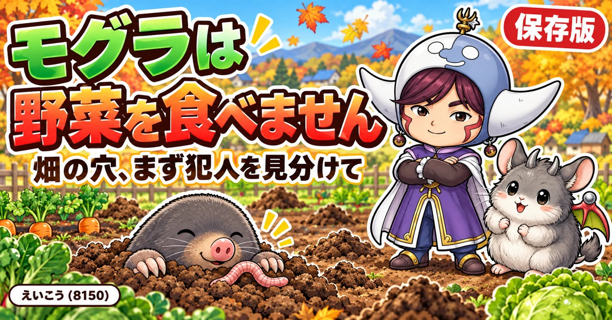
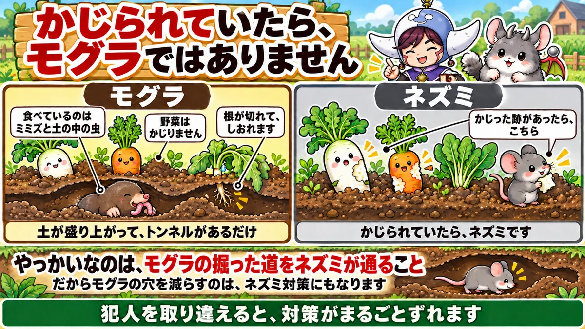
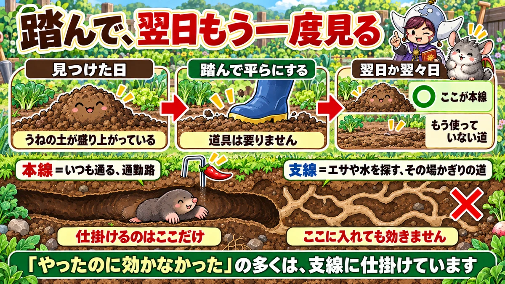
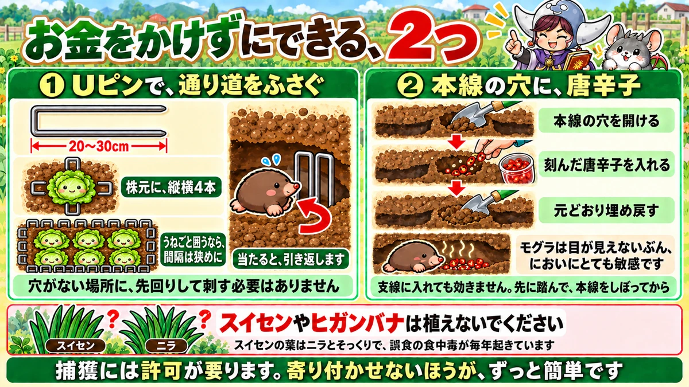

モグラ対策｜犯人の見分け方、本道の探し方、Uピンと唐辛子、作物別の守り方

📖 この記事の目次
この記事で分かること
- モグラは肉食で、ミミズや土の中の虫を食べています。野菜をかじることはありません。
- それでも困るのは、トンネルを掘るときに野菜の根を切ったり、植えたばかりの苗を倒したりするからです。
- モグラのトンネルを、ネズミが通り道に使うことがあります。かじられた跡があるなら、まずネズミを疑います。
- トンネルには、毎日のように使う「本道」と、ときどきしか使わない「側道」があります。仕掛けは本道に置きます。
- 家庭菜園で手軽にできるのは、Uピンで根の周りをふさぐ方法と、本道に刻んだ唐辛子を入れる方法です。
- 音、におい、植物、捕獲など、ほかの方法も、どこまで確かめられているかを分けて書きました。
- モグラを捕まえるには、原則として許可が要ります。寄せつけない工夫のほうが、ずっと手軽です。
畑の土が、ある朝ぽこぽこと盛り上がっている。うねの一部だけ芽が出ない。元気だった株が、急にしおれた。家庭菜園を続けていると、どこかで一度はモグラに出会います。
ただ、モグラの対策は、調べるほどに情報がばらばらです。「これで撃退できた」という話もあれば、「何をやっても効かない」という声もあります。この記事では、モグラという生き物の性質から始めて、見分け方、被害の出方、対策、作物ごとの守り方まで、順番に整理しました。根拠がはっきりしている話と、言い伝えに近い話は、分けて書いています。
早見：モグラ対策の基本
まず確かめること
- かじった跡があるか：あればネズミ。なければモグラの可能性が高い
- プランターかどうか：底のある容器なら、モグラは入れない
- 本道かどうか：トンネルを踏んで平らにし、翌日か翌々日にまた持ち上がっていれば本道
家庭菜園でまず試す2つ
- Uピン：針金をコの字に曲げ、長さ20〜30cmほどのものを株の周りに縦横4本差す
- 唐辛子：本道の穴を開け、刻んだ唐辛子を入れて、元どおりに埋め戻す
先に守る場所
- タネをまいたばかりのうね
- 植えつけたばかりの苗
- さつまいも、落花生、にんじんなど、土の中で育つもの
モグラはどんな生き物か
対策の前に、相手のことを少し知っておきましょう。モグラの性質が分かると、なぜその対策なのかが見えてきます。
食べているのは、ミミズと土の虫
モグラは肉食の動物です。東京都の農業向けの資料では、ミミズ、コガネムシの幼虫、カタツムリ、ナメクジ、クモ、ヤスデ、カエルなどを食べ、機会があればもっと大きな生き物も食べる、と説明されています。
野菜の根や芋、球根を食べることはありません。ここが、対策を考えるうえでいちばん大切な出発点です。
とても食いしん坊
同じ資料では、モグラは1日に自分の体重の半分から同じくらいの量のエサが必要だといわれる、とされています。人間に置きかえると、毎日とんでもない量を食べていることになります。
それだけの量を土の中から探し出すために、1日に数十mものトンネルを掘ることがある、とも書かれています。畑のあちこちが盛り上がるのは、モグラが休まずエサを探し回っているしるしです。
目ではなく、鼻と体で感じている
モグラは土の中で暮らしているので、目にはほとんど頼っていません。そのかわり、においをかぐ力、ふれて感じる力、音を聞く力がとても鋭いといわれます。
この性質が、家庭菜園の対策の土台になっています。においの強いものを嫌がる、何かにぶつかると引き返す。どちらも、鼻と体で周りを感じているからこそ起きることです。
動くのは朝と夕方が多い
モグラの活動は、1日のうちでかなり規則的で、朝と夕方に盛んだとされています。夜には地上を歩くこともあるようです。
朝の畑で新しい盛り土を見つけることが多いのは、このためです。見回りをするなら、朝がいちばん変化に気づきやすい時間です。
トンネルには、役割の違う道がある
モグラのトンネルは、どれも同じではありません。巣は土手のような場所に作られ、そこから何本かの道がのびています。巣とエサ場を結ぶ道は何度も使われますが、たまにしか通らない道や、一度掘ったきりの道もあります。
この「何度も使う道」が本道、それ以外が側道です。対策の成否は、ほとんどこの区別にかかっています。くわしくは後の章で書きます。

犯人を見分ける
畑で起きた被害が、本当にモグラのしわざなのか。ここを確かめずに対策を始めると、手間をかけたのに何も変わらない、ということになりがちです。
かじられていたら、ネズミ
大根やにんじん、さつまいもに歯形のような跡がある。芋に穴があいている。こうした「食べられた跡」は、モグラではありません。モグラは野菜を食べないからです。
かじる被害の多くは、野ネズミのしわざです。ネズミは植物の根や芋、球根も食べます。
モグラとネズミは、道を共有している
やっかいなのは、この2つが無関係ではないことです。モグラが掘ったトンネルを、ネズミが通り道として使うことがあります。東京都の資料でも、トンネルがネズミの通路になり、その被害が大きくなる場合がある、と書かれています。
つまり、トンネルがあってかじられた跡もある、という畑では、モグラとネズミの両方がかかわっている可能性があります。モグラのトンネルを減らすことは、ネズミが入りこむ道を減らすことにもつながります。
苗が根元で倒れていたら、土の中の虫も疑う
植えたばかりの苗が、上は元気なのに急に倒れたり枯れたりすることがあります。こんなとき、モグラのほかに疑いたいのが、ネキリムシのような土の中の虫です。苗の根元をかじり、苗を枯らしてしまいます。
見分けるには、株の周りの土を指で軽く掘ってみます。トンネルや土の盛り上がりがなく、株元の近くに丸まった幼虫がいれば、虫のしわざです。トンネルが株の下を通っていれば、モグラを疑います。
プランターなら、モグラではない
底のあるプランターや鉢は、モグラが下から入ってくることはできません。プランターの株が急にしおれたなら、根を食べるコガネムシの幼虫、根詰まり、水の多すぎ、少なすぎを疑うほうが近道です。
見分けの早見
- 盛り土やトンネルがあり、かじり跡はない：モグラ
- かじり跡がある：ネズミ（モグラのトンネルを使っていることも）
- トンネルはなく、苗が根元で倒れている：ネキリムシなど土の中の虫
- プランターで株がしおれる：コガネムシの幼虫、根詰まり、水の量
モグラの被害は、どう出るか
モグラは野菜を食べませんが、被害がないわけではありません。出方を知っておくと、早めに気づけます。
根が切られて、株がしおれる
モグラが株の真下を通ると、根が切られたり、根の周りに空洞ができたりします。根が土から水を吸えなくなるので、株がしおれていきます。
うねの一部だけが、横に倒れこむようにしおれている。その下を掘るとトンネルが通っている。これは、モグラが通ったあとによく見られる形です。
まいたタネが、芽を出さない
いちばん取り返しがつかないのが、タネをまいた直後です。まいたばかりのうねの中をモグラが通ると、土がかき回され、タネが動いたり、乾いたりして、芽が出なくなります。
にんじんのように細かいタネをまく野菜では、モグラの通った筋だけ芽が出ず、うねが歯抜けのようになることがあります。発芽と同時にモグラに入られ、初めの育ちが悪くなった例も、動画で紹介されていました。
土の中で太るものが、育ちきらない
さつまいもや落花生のように、土の中で実や芋を太らせる野菜も、モグラの影響を受けやすいものです。根の周りを荒らされると、芋が十分に太らないことがあります。さつまいもで、初めのころのモグラ被害のせいで芋が太らず、収量が思ったほど伸びなかった、という例もありました。
落花生は、実ができるころにモグラがやってくることがある、と紹介されています。
苗が浮いて、倒れる
植えつけたばかりの苗は、まだ根が十分に張っていません。その下をモグラが通ると、苗が持ち上げられて浮き、倒れてしまうことがあります。
あぜや土手に穴があく
田んぼでは、モグラがミミズを探してあぜに穴をあけ、そこから水がもれる、という困りごともよく知られています。畑でも、土手やうねの肩が崩れやすくなることがあります。
ミミズが減る
見落としがちですが、モグラはミミズをたくさん食べます。ミミズは土をやわらかくし、落ち葉や有機物を分解してくれる、畑にとってありがたい生き物です。モグラが居ついた畑では、こうした働き手が減っていくことになります。
モグラが通ったしるし
本道を探す前に、畑のどこにモグラが来ているのかを見つける必要があります。モグラの通ったあとは、主に3つの形で現れます。
地面が筋のように盛り上がる
浅いところを掘り進んだトンネルは、地面がもこもこと筋のように盛り上がって見えます。上から踏むと、ふかっと沈む感じがします。この筋が、モグラの通り道です。
土がこんもり山になる
ところどころに、土が小さな山のように盛られていることがあります。深いところを掘ったときの土を、地上に押し出した跡です。目立つので最初に気づきやすいのですが、次の章でくわしく書くとおり、ここ自体は通り道ではありません。
マルチが持ち上がる
マルチを張ったうねでは、マルチの下を通ったトンネルが、マルチを押し上げて筋のように浮かせることがあります。マルチは地面の表面をおおっているだけなので、土の中を通るモグラを止めることはできません。マルチのうねも、ときどき上から見てみましょう。
株がぐらつく
株を軽くさわったときに、根元がぐらぐらしていたり、株の下に空洞がある感じがしたりしたら、トンネルが下を通っているかもしれません。

本道と側道を見分ける
モグラ対策でいちばん大事なのが、この章です。どんな方法を選ぶにしても、仕掛ける場所を間違えると、効き目は出ません。
本道は、毎日通る生活の道
本道は、巣とエサ場を結ぶ道です。モグラはこの道を何度も行き来します。もし本道がふさがれると、モグラはすぐに掘り直して、元どおりにしてしまいます。
側道は、一度きりのことが多い
側道は、エサを探したり、水を飲みに行ったりするために掘られる道です。一度掘ったきり使われないものや、ときどきしか通らないものも多くあります。
側道に唐辛子を入れたり、ピンを差したりしても、モグラがもうその道を通らなければ、何の意味もありません。「やってみたけれど効かなかった」という話の中には、側道に仕掛けていたものも多いと考えられます。
見分ける手順
道具は要りません。足だけで分かります。
- 手順1：地面が筋のように盛り上がったトンネルや、盛り土のまわりを、足で踏んで平らにする
- 手順2：どこを踏んだか分かるように、目印の棒を立てておく
- 手順3：翌日か翌々日に見に行く
- 手順4：また持ち上がっていれば、そこが本道。平らなままなら、側道か、もう使っていない道
何か所か同時に踏んでおくと、どの道が本道なのか、畑の中での通り道の流れが見えてきます。
こんもりした盛り土は、通路そのものではない
土がこんもり山のように盛られたところは、トンネルを掘ったときに出た土を外に押し出した場所です。東京都の資料でも、盛り上がったところは通路ではない、とされています。
仕掛けを置くのは、盛り土の真下ではなく、盛り土と盛り土をつなぐように地面の下を走っている道のほうです。踏んだあとに持ち上がってくるのは、この道です。
穴を埋めるだけでは、終わらない
盛り土を見つけるたびに平らにならしている方も多いと思います。それ自体は悪いことではありませんが、本道なら、モグラはすぐに掘り直します。
逆にいえば、ならしたのに翌日また持ち上がった場所は、本道だと教えてくれていることになります。ならす作業は、対策ではなく「調べる作業」と考えると、無駄になりません。

対策1：Uピンで、根の周りをふさぐ
しくみ
モグラは、土の中で何かにぶつかると引き返す性質があります。その性質を使って、守りたい株の周りに障害物を埋めておく方法です。
用意するもの
- Uピン（マルチや防草シートをとめるピン）または太めの針金
- 長さは20〜30cmほど
針金を使う場合は、コの字に折り曲げて使います。
株1つを守るとき
- 株の周りに、縦のラインと横のラインで4か所、ピンを差しこむ
- 株を囲むように、四方に置くイメージ
- モグラが近づいてピンにふれると、向きを変えてよそへ行く
モグラの穴がまったくない場所に、先回りして差す必要はありません。トンネルが近くまで来ている株、これから来そうな株を選んで守ります。
うねごと守るとき
落花生のように、うね全体を守りたいときは、うねの周りをぐるりとUピンで囲む方法があります。モグラがすき間からうねの中に入れないように、ピンの間隔はやや狭めにして差していきます。
ピンはたくさん必要になりますが、モグラ対策としてとても有効だと紹介されていました。土の中で実る野菜で、毎年モグラに悩まされる場所なら、検討する価値があります。
何本あればいいか
株1つを守るなら4本です。守りたい株が5株なら20本、と数えておくと、買いすぎも足りなくなることも防げます。うねごと囲む場合は、うねの周りの長さに合わせて、すき間ができないだけの本数が要ります。まずは被害の出ている株や、モグラが近づいている株から始め、足りなければ少しずつ増やしていくのが無理のない進め方です。
本道の上に差す
本道が分かっている場合は、その道にピンを差しこんで通せんぼする方法もあります。モグラは向きを変えて、別の方向へ進んでいきます。
気をつけること
ピンを差すときは、株の根を傷つけないように、株元からある程度はなれた場所に差します。また、片づけるときに抜き忘れると、次に耕すときに道具を傷めたり、けがをしたりする原因になります。何本、どこに差したかを覚えておきましょう。
対策2：本道の穴に、唐辛子を入れる
しくみ
モグラはにおいに敏感です。本道の中に、においの強いものを入れておくと、モグラがその道を嫌がって、ほかへ移っていくことが期待できます。
手順
- 踏んで確かめた本道の位置を、移植ごてやシャベルで開ける
- 刻んだ唐辛子を中に入れる
- 開けた穴を元どおりに埋め戻す
材料は唐辛子だけなので、お金はほとんどかかりません。
いちばん大切なのは、入れる場所
この方法も、本道に入れてこそ意味があります。側道に入れても、モグラがそこを通らなければ、においに出会うことがありません。必ず先に、踏んで確かめる作業をしてから入れてください。
入れ直しと、さわるときの注意
においは、時間がたつと少しずつ弱くなっていきます。しばらくして、また同じあたりに新しい盛り土が出てきたら、もう一度踏んで本道を確かめ、唐辛子を入れ直します。
唐辛子をさわった手で、目や顔をこすらないように気をつけてください。刻むときは手袋をして、作業のあとはよく手を洗いましょう。
ほかのにおいの方法
においを使う方法は、ほかにもいろいろ語られています。
カメムシを使う方法：紙コップにティッシュを1枚入れ、捕まえたカメムシを3匹ほど入れて、ラップでふたをして小さな空気穴をあけ、モグラの通り道の近くに埋める、というものです。紹介していた方自身も、友人から聞いた話として話していました。においで遠ざけるという考え方は同じですが、確かめられた方法というよりは、昔ながらの知恵に近いものです。
にんにくを植える方法：にんにくのにおいがモグラやネズミの対策になるかもしれない、という話もあります。ただ、話していた方も「かもしれない」という言い方でした。
どちらも、試してみるのは自由ですが、まずは本道を見つけること、Uピンや唐辛子と組み合わせることをおすすめします。
音、振動、植物、薬：ほかの方法の考え方
市販品や言い伝えも含めると、モグラ対策の方法はたくさんあります。ここでは、それぞれがどこまで確かめられているかを整理します。
音や振動で追い払う
モグラは音や振動にも敏感です。そこで、地面に差して音や振動を出す機械や、風を受けて回る風車を立てる方法があります。風車はペットボトルで手作りすることもできます。
農業向けの資料でも、手段の1つとして挙げられています。ただし、どれくらいの範囲に、どれくらいの期間効くのかを示した数字は、今回調べた範囲では見つかりませんでした。試すなら、ほかの方法と組み合わせ、効き方を自分の畑で見てみる、くらいの気持ちで取り入れるのがよいと思います。
においの強い植物を植える
田んぼのあぜにヒガンバナが多いのはモグラよけのため、という話は、昔からよく聞かれます。スイセンやヒガンバナを、モグラが入ってきそうな方向に植えるとよい、という紹介もあります。
ただ、この話には注意点が2つあります。
1つ目は、理由がはっきりしないことです。これらの植物は球根に毒を持っていますが、モグラはもともと球根を食べません。効くとすればにおいですが、実際に確かめた記録は見当たらず、「といわれている」という書き方の紹介が中心です。資料によっては、守る相手をモグラではなくネズミとしているものもあります。ネズミは球根を食べるので、そちらのほうが理屈は通ります。
2つ目は、安全の問題です。スイセンの葉はニラによく似ていて、間違えて食べてしまう食中毒が毎年のように起きています。厚生労働省のまとめでは、2015年から2024年までの10年間で74件、227人が中毒になり、亡くなった方もいます。ニラや玉ねぎ、アサツキを育てている畑では、同じ場所にスイセンを植えることはおすすめしません。
エサを減らす
モグラの食べ物であるミミズや虫を、土の消毒や殺虫剤で減らすことで、モグラが来にくくなる、という考え方もあります。
ただ、ミミズは土を育ててくれる大切な生き物です。有機・無農薬で野菜を育てる畑では、この方法は選びにくいでしょう。モグラが来るのは、それだけ土に生き物が多いということでもあります。
地中に壁を作る
モグラのトンネルは、深くても1mほどだとされています。そこで、畑の周りの地中に網を張ったり、深さ1mほどの溝を掘ったりして、通り道そのものを遮る方法があります。
確実性は高い方法ですが、家庭菜園で畑全体を囲むのは大がかりです。小さな花壇や、どうしても守りたい一角に限って考える方法といえます。
天敵にまかせる
ヘビの中でも、アオダイショウはネズミやモグラを食べるといわれます。一方、よく見かけるシマヘビは、主にカエルを食べ、ネズミやモグラはほとんど食べないそうです。畑の周りの生き物も、少しずつ役割を分けあっています。
ネズミもかかわっているときの対策
かじり跡があり、トンネルもある。そんな畑では、モグラだけでなくネズミへの手当ても考えておきます。
草を刈って、すみかを減らす
野ネズミは、雑草がしげった環境を好むとされています。東京都の資料でも、除草など畑の周りを整えることが、被害を避ける大切な対策として挙げられています。畑の周りの草むらや、積みっぱなしの資材の山は、ネズミの隠れ家になります。こまめに草を刈り、物を置きっぱなしにしないだけでも、ネズミが落ち着きにくい場所になります。
ネズミは移動する
同じ資料では、野ネズミはよく移動する動物で、畑だけでなく、家の周りや草地も含めて対策することが大切だ、とも書かれています。家庭菜園の小さな畑だけで完全に防ぐのは難しい、と考えておいたほうが、気持ちの上でも楽です。
薬を使うなら、ラベルどおりに
ネズミ用の薬は農薬にあたり、人やペットにも害のあるものが多くあります。使う場合は、容器やラベルに書かれた使い方を必ず守り、子どもやペットがふれない場所に置きます。なお、モグラは肉食なので、ネズミ用の毒エサはモグラ対策にはなりません。
フクロウやヘビも、ネズミを食べる
果樹園の研究では、フクロウが巣を作った園でネズミが少なくなった、という報告もあります。家庭菜園で天敵を呼ぶのは簡単ではありませんが、周りの生き物がネズミを減らしてくれていることは、覚えておいてよいことです。
捕まえるという選択について
原則として、許可が要る
「いっそ捕まえてしまいたい」と思うこともあるでしょう。ただ、モグラは法律で守られている野生の動物で、捕まえるには、原則として都道府県などの許可が必要です。
環境省の資料では、農業を仕事にしている人が自分の仕事の範囲でモグラ類やネズミ類を捕まえる場合には、この許可の決まりは当てはまらない、とされています。一方で、家庭菜園がこれに当たるかどうかは、書かれていませんでした。
捕獲器を買う前に、お住まいの市区町村や都道府県の担当の窓口に確かめるのが確実です。
寄せつけないほうが、ずっと手軽
許可の手続きを考えると、家庭菜園では、捕まえるよりも、守りたい場所に寄せつけない工夫のほうが現実的です。Uピンと唐辛子は、どちらもこの考え方に立った方法です。
作物ごとの守り方
モグラの被害の出方は、育てている野菜によって違います。守りどころを作物ごとにまとめます。
にんじん、葉物：まいた直後
細かいタネを筋にまく野菜は、まいてから芽がそろうまでがいちばん危ない時期です。まく前に、うねの近くに盛り土やトンネルがないかを確かめ、近くまで来ていたら、うねの周りにピンを差しておきます。
まいたあとに歯抜けになってしまったら、その部分だけまき直すこともできます。
さつまいも：植えてからの初め
さつまいもは、植えつけてから根がしっかり張るまでの初めのころに荒らされると、芋が太りにくくなることがあります。植えつけのときに、周りのトンネルの様子を見ておきましょう。
落花生：実ができるころ
落花生は、土の中に実ができるころにモグラが寄ってくることがあります。うねの周りをピンで囲む方法が、いちばん向いている野菜です。
苗を植える野菜：植えつけ直後
トマトやなす、キャベツのように苗を植える野菜は、根が張るまでの間に下を通られると、苗が浮いて倒れることがあります。植えつけたら、株の周りの土を手で軽く押さえ、苗がぐらついていないかを数日見てあげましょう。
じゃがいも、かぼちゃ：急にしおれたとき
株やつるの一部が、急に横倒しにしおれたら、その下をトンネルが通っていないかを確かめます。トンネルが見つかったら、踏んで本道かどうかを確かめ、まだ元気な隣の株の周りにピンを差して、被害が広がらないようにします。
1週間の進め方
ここまでの内容を、実際の作業の順番に並べてみます。盛り土を見つけた日を1日目とします。
1日目：被害の形を見て、踏んでおく
- かじり跡があるか、株元に虫がいないかを見て、犯人の見当をつける
- 盛り上がったトンネルを、何か所か足で踏んで平らにする
- 踏んだ場所に、目印の棒を立てる
- すぐに守りたい株があれば、その周りにUピンを差しておく
2〜3日目：本道を決める
- 踏んだ場所を見て回り、また持ち上がっている場所に印をつける
- 持ち上がった場所が本道。平らなままの場所は、側道か、もう使っていない道
同じ日：本道に唐辛子とピン
- 本道の位置を開けて、刻んだ唐辛子を入れ、埋め戻す
- 本道が守りたい株やうねに向かっていれば、その道にピンを差して通せんぼする
1週間後：見回り
- 新しい盛り土が出ていないかを見る
- 出ていたら、また踏んで、本道かどうかを確かめるところから始める
この流れを1回やってみると、自分の畑のどこをモグラが通っているのかが、少しずつ見えてきます。
畑の地図に書いておく
盛り土の場所、本道だった場所、ピンを差した場所を、紙に簡単な畑の地図をかいて書きこんでおくと便利です。モグラの通り道は、年によって大きく変わらないこともあります。翌年のタネまきや植えつけの前に地図を見返せば、先回りして守る場所が分かります。ピンの抜き忘れも防げます。
季節ごとのモグラの動き
秋は、盛り土が目立つ
涼しくなって雨が増えるころ、畑の盛り土が急に目立ちはじめることがあります。ちょうど秋冬野菜のタネまきや植えつけの時期と重なるので、被害に気づきやすい季節です。
見つけた日が、始める日
モグラ対策に、決まった時期はありません。盛り土やトンネルを見つけたら、その日のうちに踏んで、翌日に本道を確かめる。この流れを始めることが、いちばんの近道です。
タネまきや植えつけの前に、ひと回り
タネまきや植えつけをする前に、畑をひと回りして、新しい盛り土がないかを見ておく習慣をつけると、被害を先回りして防ぎやすくなります。
よくある失敗
全部の穴に仕掛けてしまう
見つけた穴すべてに唐辛子を入れたり、ピンを差したりすると、手間も材料もかかります。そのわりに、側道に仕掛けたぶんは効きません。先に踏んで本道をしぼりこむほうが、結果的に早く終わります。
ネズミの被害に、モグラの対策をする
かじられた跡があるのに、モグラ用の対策だけをしていても、被害は止まりません。被害の形をよく見て、犯人を見分けることが先です。
畑じゅうにピンを差す
穴のない場所にまでピンを差しても、疲れるだけです。守りたい株と、モグラが近づいている場所にしぼって使いましょう。
一度で終わったと思う
モグラは、別の道から入ってくることもあります。対策をしたあとも、ときどき畑を見回って、新しい盛り土が出ていないかを確かめ続けることが大切です。
よくある質問
モグラが来る畑は、土が悪いのですか
むしろ逆の面があります。モグラはミミズや虫を食べにやってくるので、モグラが来るということは、土の中に生き物が多いということでもあります。土づくりがうまくいっている証拠ともいえます。
モグラは、いつか自然にいなくなりますか
エサが多い場所には、モグラは来つづけます。いなくなるのを待つより、守りたい場所を決めて、そこに寄せつけない工夫をするほうが確実です。
モグラは、どこから来るのですか
モグラの巣は、土手のような場所に作られることが多いとされています。畑の中に住んでいるというより、畑の外の土手や草地から、エサを探しに通ってきていることが多いと考えられます。踏んで確かめた本道が、畑の外のほうへのびていたら、そこが入り口です。入り口に近いうねから守ると、効率がよくなります。
一度追い払えば、もう来ませんか
においの方法は、時間がたつと薄れていきます。Uピンも、モグラが別の道を掘れば、そちらから入ってきます。一度でおしまいではなく、見回りを続けて、新しい道が出たらその都度対応する、と考えておきましょう。
盛り土の土は、どうすればいいですか
盛り土は、モグラが土の中から押し出したただの土です。くわや足で平らにならし、うねの肩が崩れていれば、その土を寄せて形を直しておけば十分です。ならす前に、本道を確かめるための「踏む作業」を兼ねておくと、手間が一度ですみます。
隣の畑から来ている気がします
モグラの通り道は、畑の境目とは関係なくのびています。自分の畑だけで道をすべてふさぐのは難しいので、境目に近いうねや、入り口になっている本道を中心に守るのが現実的です。市民農園や貸し農園なら、管理する方に相談してみるのもよい方法です。
市販の撃退グッズは効きますか
音や振動、においを使った商品がいろいろ売られています。農業向けの資料でも手段として挙げられているものはありますが、どれくらい効くかの数字は、今回調べた範囲では見つかりませんでした。使うなら、本道の見分けと組み合わせ、自分の畑で効き方を見てみるのがよいと思います。
トンネルを見つけたら、水を流しこんでもいいですか
穴に水を流しこむ方法が語られることもありますが、効き目を確かめた情報は見当たりませんでした。畑の土が水びたしになると、野菜の根にもよくないので、おすすめはしません。
学ぶ：モグラが掘り続けるわけ
掘ることが目的ではない
モグラのトンネルは、住む場所を作るためだけのものではありません。トンネルを掘り進めながら、壁から落ちてくるミミズや虫を探して食べている、エサ探しの道でもあります。1日に体重の半分から同じくらいのエサが必要だとすれば、休まず掘り続けるのも納得がいきます。
だから、本道を大事にする
毎回新しい道を掘っていては、体力がもちません。だからこそ、よく使う道は残して、何度も通る。それが本道です。踏んでつぶしても翌日には元どおりになっているのは、モグラにとってそれだけ大切な道だからです。
弱点は、感じる力の鋭さ
目にほとんど頼らず、においや手ざわりで周りを感じているからこそ、においの強いものを避け、ぶつかったものからは引き返します。Uピンも唐辛子も、モグラのこの鋭さを、逆に利用している方法です。
まとめ
ここまで読んでくださって、ありがとうございます！
モグラ対策のポイントを、もう一度まとめておきます。
- モグラは肉食。野菜はかじらない。かじり跡があれば、ネズミを疑う
- モグラのトンネルを、ネズミが通ることもある
- 被害は、根が切れてしおれる、まいたタネが芽を出さない、苗が浮いて倒れる、芋が太らない
- トンネルには本道と側道がある。仕掛けるのは本道だけ
- 本道は、踏んで平らにして、翌日か翌々日にまた持ち上がるかで見分ける
- Uピンは長さ20〜30cmほど。株の周りに縦横4本。うねごと守るなら、間隔を狭めて囲む
- 唐辛子は、本道の穴に入れて、元どおりに埋め戻す
- 音、振動、植物の方法は、効き方の数字が見当たらない。スイセンはニラとの誤食に注意
- 捕まえるには、原則として許可が要る。寄せつけないほうが手軽
- タネまき直後のうねと、植えつけ直後の苗から先に守る
モグラは、土の中に生き物が多い畑にやってきます。追い払うことばかり考えるより、守りたい場所をしぼって、そこにだけ通り道を作らせない。そう考えると、少し気持ちが楽になります。
まずは、畑の盛り上がったトンネルを、足で踏んでみてください🐾
移植ごて
踏んで確かめた本道を開けて、刻んだ唐辛子を入れるときに使います。細身のものなら、トンネルを大きく崩さずに開けられます。


次に読む
記事一覧へ